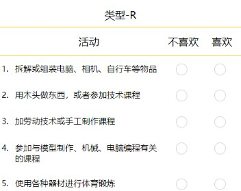
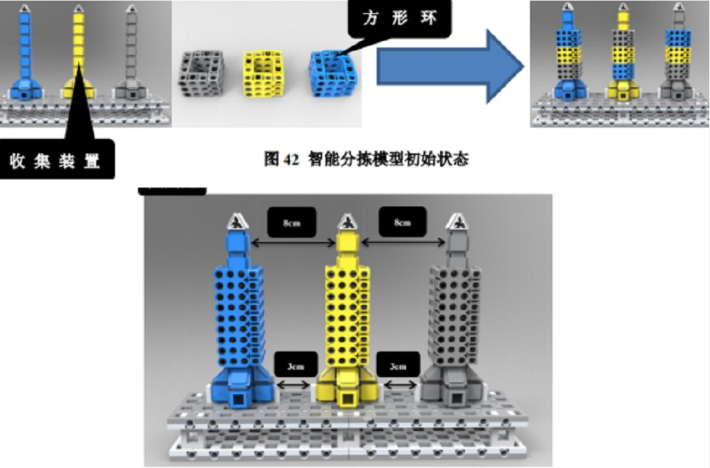

前端工程师笔试题
感谢您关注天一生才的招聘职位。
请您先看一下我们的招聘笔试题。如果您方便，可以提前答好题，面试时带来。
-
用你熟悉的CSS布局方式，实现下面样式。要求如下：
- “活动”和活动内容，上下对齐；“不喜欢”和同一列的选项，上下对齐；“喜欢”和同一列的选项，上下对齐；
- 活动内容过长，自动换行，不影响“不喜欢”和“喜欢”选项的位置；
- “不喜欢”和“喜欢”列的宽度确定。但是，页面宽度不确定。要求“活动”列宽度能自适应。

-
使用 Javascript 实现一个基本的深拷。
-
实现“页面滚动到页面尾部，加载新的数据”的效果。
-
实现一个 Vue.js 的自定义组件。该组件具备3个功能：
- 自定义组件可以接收一个初始值；
- 自定义组件中，有一个按钮。每按一次值增加1；
- 页面获取自定义组件的值。
-
下图模型中，灰、黄、蓝三种颜色的收集装置各1个。灰、黄、蓝三种颜色的方形环各3个。方形环随机摆放在收集装置上。要求将方形环进行移动，通过最少次移动，使方形环颜色与收集装置颜色一致。每次可移动一个方形环。每个收集装置上面方形环的数量不超过5个。
请用熟悉的脚本语言实现算法。

站长统计